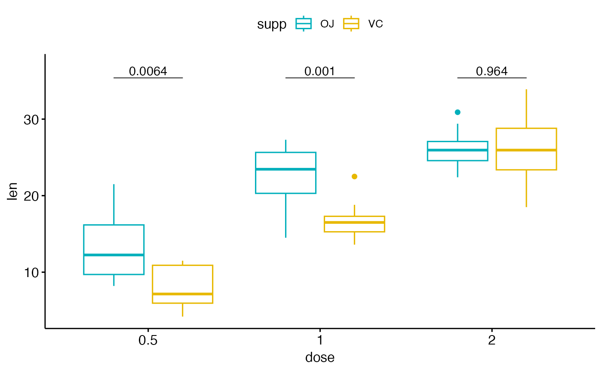
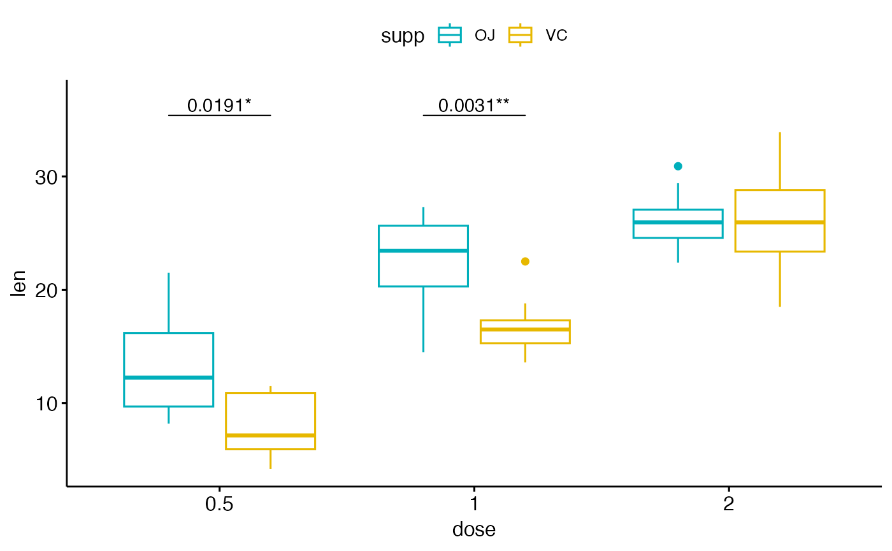
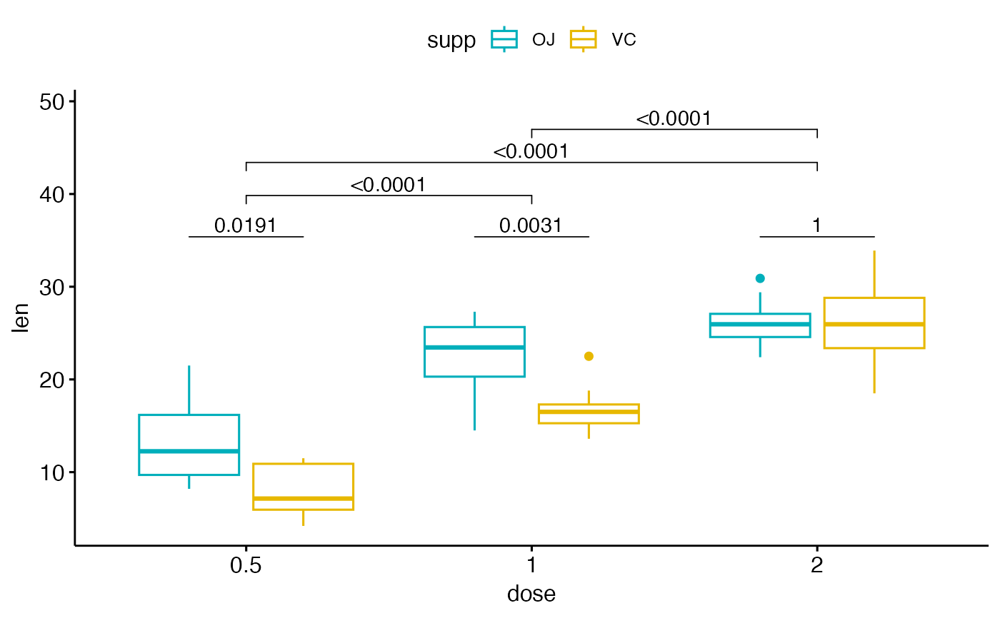
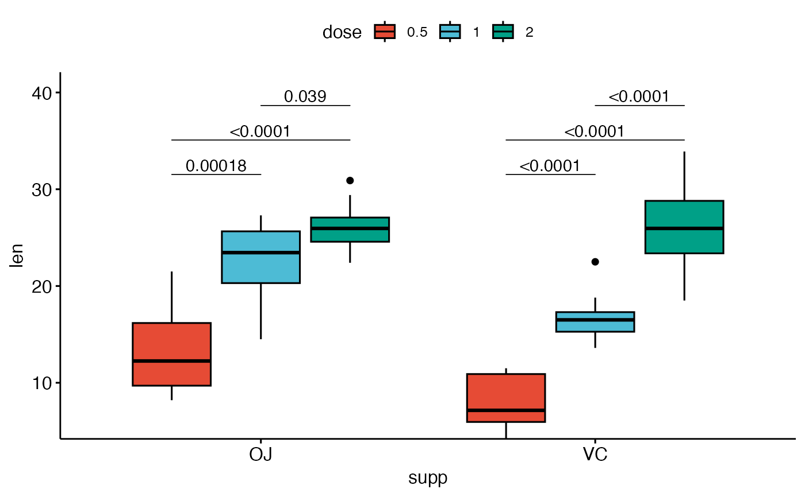
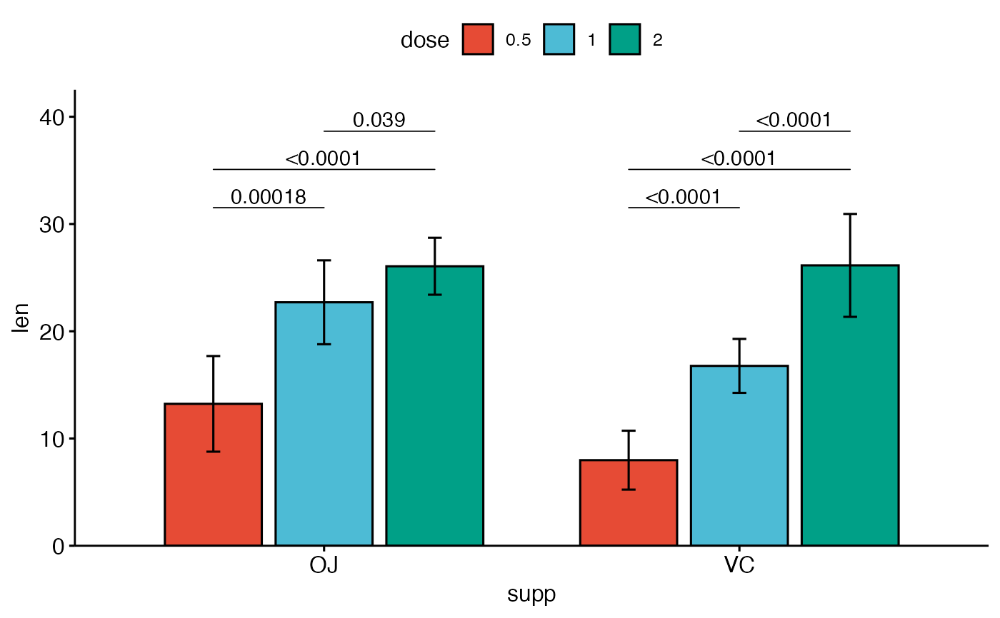

add pairwise comparison p-values to a ggplot such as box plots, dot plots and stripcharts.
Usage
stat_pwc(
mapping = NULL,
data = NULL,
method = "wilcox_test",
method.args = list(),
ref.group = NULL,
label = "p.format",
y.position = NULL,
group.by = NULL,
dodge = 0.8,
bracket.nudge.y = 0.05,
bracket.shorten = 0,
bracket.group.by = c("x.var", "legend.var"),
step.increase = 0.12,
tip.length = 0.03,
size = 0.3,
label.size = 3.88,
family = "",
vjust = 0,
hjust = 0.5,
p.adjust.method = "holm",
p.adjust.by = c("group", "panel"),
symnum.args = list(),
hide.ns = FALSE,
remove.bracket = FALSE,
p.format.style = "default",
p.digits = NULL,
p.leading.zero = NULL,
p.min.threshold = NULL,
p.decimal.mark = NULL,
signif.cutoffs = NULL,
signif.symbols = NULL,
ns.symbol = "ns",
use.four.stars = FALSE,
position = "identity",
na.rm = FALSE,
show.legend = NA,
inherit.aes = TRUE,
parse = FALSE,
...
)
geom_pwc(
mapping = NULL,
data = NULL,
stat = "pwc",
method = "wilcox_test",
method.args = list(),
ref.group = NULL,
label = "p.format",
y.position = NULL,
group.by = NULL,
dodge = 0.8,
stack = FALSE,
step.increase = 0.12,
tip.length = 0.03,
bracket.nudge.y = 0.05,
bracket.shorten = 0,
bracket.group.by = c("x.var", "legend.var"),
size = 0.3,
label.size = 3.88,
family = "",
vjust = 0,
hjust = 0.5,
p.adjust.method = "holm",
p.adjust.by = c("group", "panel"),
symnum.args = list(),
hide.ns = FALSE,
remove.bracket = FALSE,
p.format.style = "default",
p.digits = NULL,
p.leading.zero = NULL,
p.min.threshold = NULL,
p.decimal.mark = NULL,
signif.cutoffs = NULL,
signif.symbols = NULL,
ns.symbol = "ns",
use.four.stars = FALSE,
position = "identity",
na.rm = FALSE,
show.legend = NA,
inherit.aes = TRUE,
parse = FALSE,
...
)Arguments
- mapping
Set of aesthetic mappings created by
aes(). If specified andinherit.aes = TRUE(the default), it is combined with the default mapping at the top level of the plot. You must supplymappingif there is no plot mapping.- data
The data to be displayed in this layer. There are three options:
If
NULL, the default, the data is inherited from the plot data as specified in the call toggplot().A
data.frame, or other object, will override the plot data. All objects will be fortified to produce a data frame. Seefortify()for which variables will be created.A
functionwill be called with a single argument, the plot data. The return value must be adata.frame, and will be used as the layer data. Afunctioncan be created from aformula(e.g.~ head(.x, 10)).- method
a character string indicating which method to be used for pairwise comparisons. Default is
"wilcox_test". Allowed methods include pairwise comparisons methods implemented in therstatixR package. These methods are:"wilcox_test", "t_test", "sign_test", "dunn_test", "emmeans_test", "tukey_hsd", "games_howell_test".- method.args
a list of additional arguments used for the test method. For example one might use
method.args = list(alternative = "greater")for wilcoxon test.- ref.group
a character string or a numeric value specifying the reference group. If specified, for a given grouping variable, each of the group levels will be compared to the reference group (i.e. control group).
ref.groupcan be also"all". In this case, each of the grouping variable levels is compared to all (i.e. basemean).Allowed values can be:
numeric value: specifying the rank of the reference group. For example, use
ref.group = 1when the first group is the reference; useref.group = 2when the second group is the reference, and so on. This works for all situations, including i) when comparisons are performed between x-axis groups and ii) when comparisons are performed between legend groups.character value: For example, you can use
ref.group = "ctrl"instead of using the numeric rank value of the "ctrl" group."all": In this case, each of the grouping variable levels is compared to all (i.e. basemean).
- label
character string specifying label. Can be:
the column containing the label (e.g.:
label = "p"orlabel = "p.adj"), wherepis the p-value. Other possible values are"p.signif", "p.adj.signif", "p.format", "p.format.signif", "p.adj.format".an expression that can be formatted by the
glue()package. For example, when specifyinglabel = "Wilcoxon, p = \{p\}", the expression {p} will be replaced by its value.a combination of plotmath expressions and glue expressions. You may want some of the statistical parameter in italic; for example:
label = "Wilcoxon, italic(p)= {p}"
.
- y.position
numeric vector with the y positions of the brackets
- group.by
(optional) character vector specifying the grouping variable; it should be used only for grouped plots. Possible values are :
"x.var": Group by the x-axis variable and perform the test between legend groups. In other words, the p-value is compute between legend groups at each x position"legend.var": Group by the legend variable and perform the test between x-axis groups. In other words, the test is performed between the x-groups for each legend level.
- dodge
dodge width for grouped ggplot/test. Default is 0.8. It's used to dodge the brackets position when
group.by = "legend.var".- bracket.nudge.y
Vertical adjustment to nudge brackets by (in fraction of the total height). Useful to move up or move down the bracket. If positive value, brackets will be moved up; if negative value, brackets are moved down.
- bracket.shorten
a small numeric value in [0-1] for shortening the width of bracket.
- bracket.group.by
(optional); a variable name for grouping brackets before adding step.increase. Useful for grouped plots. Possible values include
"x.var"and"legend.var".- step.increase
numeric vector with the increase in fraction of total height for every additional comparison to minimize overlap.
- tip.length
numeric vector with the fraction of total height that the bar goes down to indicate the precise column/
- size
change the width of the lines of the bracket
- label.size
change the size of the label text
- family
change the font used for the text
- vjust
move the text up or down relative to the bracket.
- hjust
move the text left or right relative to the bracket.
- p.adjust.method
method for adjusting p values (see
p.adjust). Has impact only in a situation, where multiple pairwise tests are performed; or when there are multiple grouping variables. Ignored when the specified method is"tukey_hsd"or"games_howell_test"because they come with internal p adjustment method. Allowed values include "holm", "hochberg", "hommel", "bonferroni", "BH", "BY", "fdr", "none". If you don't want to adjust the p value (not recommended), use p.adjust.method = "none".- p.adjust.by
possible value is one of
c("group", "panel"). Default is"group": for a grouped data, if pairwise test is performed, then the p-values are adjusted for each group level independently. P-values are adjusted by panel whenp.adjust.by = "panel".- symnum.args
a list of arguments to pass to the function
symnumfor symbolic number coding of p-values. For example,symnum.args = list(cutpoints = c(0, 0.0001, 0.001, 0.01, 0.05, Inf), symbols = c("****", "***", "**", "*", "ns")).In other words, we use the following convention for symbols indicating statistical significance:
ns: p > 0.05*: p <= 0.05**: p <= 0.01***: p <= 0.001****: p <= 0.0001
Note: If
signif.cutoffsis provided, it takes precedence oversymnum.args.- hide.ns
can be logical value (
TRUEorFALSE) or a character vector ("p.adj"or"p").- remove.bracket
logical, if
TRUE, brackets are removed from the plot.Case when logical value. If TRUE, hide ns symbol when displaying significance levels. Filter is done by checking the column
p.adj.signif,p.signif,p.adjandp.Case when character value. Possible values are "p" or "p.adj", for filtering out non significant.
- p.format.style
character string specifying the p-value formatting style. One of:
"default"(backward compatible, uses scientific notation),"apa"(APA style, no leading zero),"nejm"(NEJM style),"lancet"(Lancet style),"ama"(AMA style),"graphpad"(GraphPad style), or"scientific"(scientific notation for GWAS). Seelist_p_format_stylesfor details.- p.digits
integer specifying the number of decimal places for p-values. If provided, overrides the style default.
- p.leading.zero
logical indicating whether to include leading zero before decimal point (e.g., "0.05" vs ".05"). If provided, overrides the style default.
- p.min.threshold
numeric specifying the minimum p-value to display exactly. Values below this threshold are shown as "< threshold". If provided, overrides the style default.
- p.decimal.mark
character string to use as the decimal mark. If NULL, uses
getOption("OutDec").- signif.cutoffs
numeric vector of p-value cutoffs in descending order for assigning significance symbols. For example,
c(0.10, 0.05, 0.01)means p < 0.10 gets "*", p < 0.05 gets "**", p < 0.01 gets "***". Default is NULL, which uses the package defaults.- signif.symbols
character vector of symbols corresponding to
signif.cutoffs. If NULL, auto-generated as "*", "**", "***" (and "****" ifuse.four.stars = TRUE).- ns.symbol
character string for non-significant results. Default is "ns". Use "" (empty string) to show nothing.
- use.four.stars
logical. If TRUE, allows four stars (****) for the most significant level. Default is FALSE.
- position
A position adjustment to use on the data for this layer. This can be used in various ways, including to prevent overplotting and improving the display. The
positionargument accepts the following:The result of calling a position function, such as
position_jitter(). This method allows for passing extra arguments to the position.A string naming the position adjustment. To give the position as a string, strip the function name of the
position_prefix. For example, to useposition_jitter(), give the position as"jitter".For more information and other ways to specify the position, see the layer position documentation.
- na.rm
If
FALSE(the default), removes missing values with a warning. IfTRUEsilently removes missing values.- show.legend
logical. Should this layer be included in the legends?
NA, the default, includes if any aesthetics are mapped.FALSEnever includes, andTRUEalways includes. It can also be a named logical vector to finely select the aesthetics to display. To include legend keys for all levels, even when no data exists, useTRUE. IfNA, all levels are shown in legend, but unobserved levels are omitted.- inherit.aes
If
FALSE(the default for most ggpubr functions), overrides the default aesthetics, rather than combining with them. This is most useful for helper functions that define both data and aesthetics and shouldn't inherit behaviour from the default plot specification. Set toTRUEto inherit aesthetics from the parent ggplot layer.- parse
logical for parsing plotmath expression.
- ...
other arguments passed on to
layer()). These are often aesthetics, used to set an aesthetic to a fixed value, likecolor = "red"orsize = 3. They may also be parameters to the paired geom/stat.- stat
The statistical transformation to use on the data for this layer. When using a
geom_*()function to construct a layer, thestatargument can be used to override the default coupling between geoms and stats. Thestatargument accepts the following:A
Statggproto subclass, for exampleStatCount.A string naming the stat. To give the stat as a string, strip the function name of the
stat_prefix. For example, to usestat_count(), give the stat as"count".For more information and other ways to specify the stat, see the layer stat documentation.
- stack
logical value. Default is FALSE; should be set to TRUE for stacked bar plots or line plots. If TRUE, then the brackets are automatically removed and the
dodgevalue is set to zero.
Details
Notes on adjusted p-values and facet. When using the ggplot facet functions, the p-values are computed and adjusted by panel, without taking into account the other panels. This is by design in ggplot2.
In this case, when there is only one computed p-value by panel, then using `label = "p"` or `label = "p.adj"` will give the same results using `geom_pwc()`. Again, p-value computation and adjustment in a given facet panel is done independently to the other panels.
One might want to adjust the p-values of all the facet panels together. There are two solutions for that:
Using
ggadjust_pvalue(p)after creating the plotpor adding the adjusted p-value manually using
stat_pvalue_manual(). Read more at:
Examples
df <- ToothGrowth
df$dose <- factor(df$dose)
# Data preparation
# %%%%%%%%%%%%%%%%%%%%%%%%%%%%%%%%%%%%
# Transform `dose` into factor variable
df <- ToothGrowth
df$dose <- as.factor(df$dose)
# Add a random grouping variable
df$group <- factor(rep(c("grp1", "grp2"), 30))
head(df, 3)
#> len supp dose group
#> 1 4.2 VC 0.5 grp1
#> 2 11.5 VC 0.5 grp2
#> 3 7.3 VC 0.5 grp1
# Two groups by x position
# %%%%%%%%%%%%%%%%%%%%%%%%%%%%%%%%%%%%
# Create a box plot
# Add 10% spaces between the p-value labels and the plot border
bxp <- ggboxplot(
df,
x = "dose", y = "len",
color = "supp", palette = c("#00AFBB", "#E7B800")
) +
scale_y_continuous(expand = expansion(mult = c(0.05, 0.10)))
# Add p-values onto the box plots
# label can be "p.format" or "p.adj.format"
bxp + geom_pwc(
aes(group = supp),
tip.length = 0,
method = "t_test", label = "p.format"
)

# Show adjusted p-values and significance levels
# Hide ns (non-significant)
bxp + geom_pwc(
aes(group = supp),
tip.length = 0,
method = "t_test", label = "{p.adj.format}{p.adj.signif}",
p.adjust.method = "bonferroni", p.adjust.by = "panel",
hide.ns = TRUE
)

# Complex cases
# %%%%%%%%%%%%%%%%%%%%%%%%%%%%%%%%%%%%
# 1. Add p-values of OJ vs VC at each dose group
bxp.complex <- bxp +
geom_pwc(
aes(group = supp),
tip.length = 0,
method = "t_test", label = "p.adj.format",
p.adjust.method = "bonferroni", p.adjust.by = "panel"
)
# 2. Add pairwise comparisons between dose levels
# Nudge up the brackets by 20% of the total height
bxp.complex <- bxp.complex +
geom_pwc(
method = "t_test", label = "p.adj.format",
p.adjust.method = "bonferroni",
bracket.nudge.y = 0.2
)
# 3. Display the plot
bxp.complex

# Three groups by x position
# %%%%%%%%%%%%%%%%%%%%%%%%%%%%%%%%%%%%
# Simple plots
# _____________________________________
# Box plots with p-values
bxp <- ggboxplot(
df,
x = "supp", y = "len", fill = "dose",
palette = "npg"
)
bxp +
geom_pwc(
aes(group = dose),
tip.length = 0,
method = "t_test", label = "p.adj.format",
bracket.nudge.y = -0.08
) +
scale_y_continuous(expand = expansion(mult = c(0, 0.1)))

# Bar plots with p-values
bp <- ggbarplot(
df,
x = "supp", y = "len", fill = "dose",
palette = "npg", add = "mean_sd",
position = position_dodge(0.8)
)
bp +
geom_pwc(
aes(group = dose),
tip.length = 0,
method = "t_test", label = "p.adj.format",
bracket.nudge.y = -0.08
) +
scale_y_continuous(expand = expansion(mult = c(0, 0.1)))
